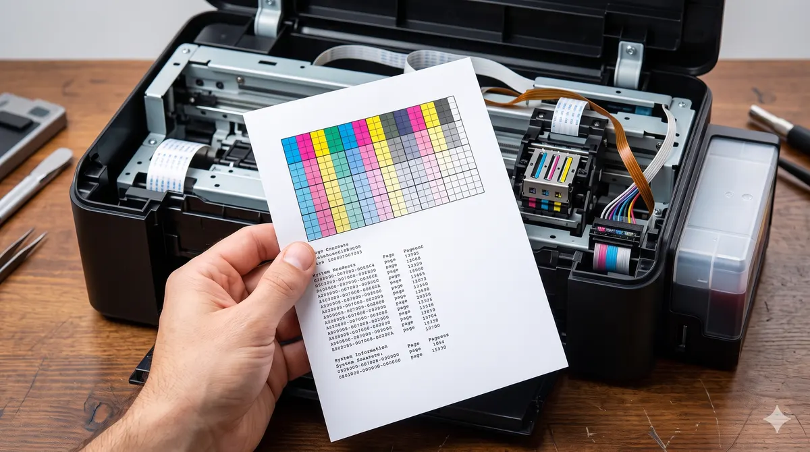
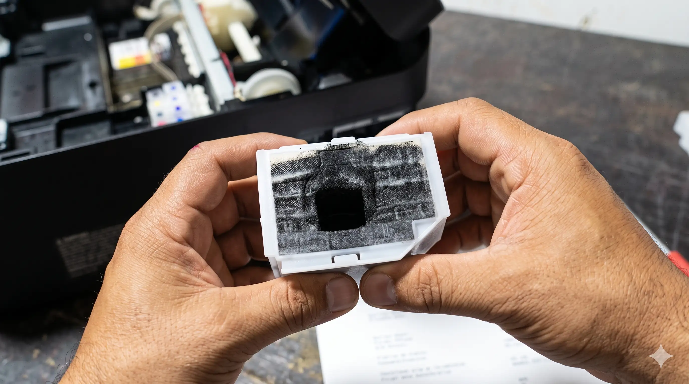
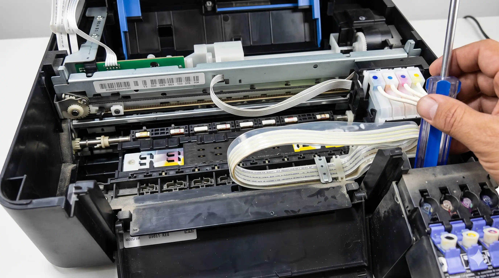
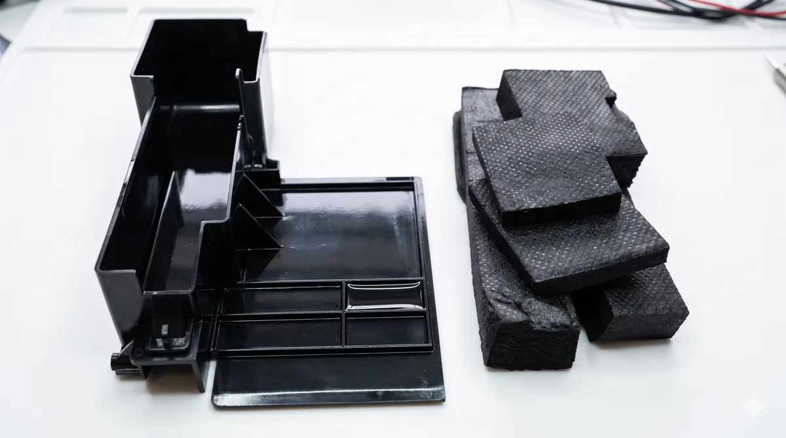

Reparación de impresoras
en Oaxaca
Atascos de papel, rayas, cabezal tapado o que no imprime.
Diagnóstico desde $150 MXN — se descuenta si autorizas la reparación.
¿Cuál es el problema de tu impresora?
Identificamos la falla con el diagnóstico y te damos una solución concreta.
Atasco de papel
El papel se atasca dentro y no puedes sacarlo. Revisamos rodillos, sensores y mecanismo de alimentación.
No imprime o no responde
La impresora enciende pero no hace nada al mandar documentos. Revisamos conexión, drivers y cabezal.
Imprime con rayas o líneas
Rayas horizontales o verticales en cada impresión. Limpiamos y alineamos el cabezal de impresión.
Cabezal tapado o sin tinta
La tinta no sale aunque el cartucho esté lleno. Limpieza profunda de cabezal y sistema de tinta.
Hace ruido pero no imprime
Mecanismo dañado o engrane roto. Revisamos piezas internas y rodillos.
Imprime borroso o desalineado
Texto o imágenes que salen torcidos o borrosos. Calibración y limpieza del sistema de impresión.
¿Tu falla no está en la lista? Escríbenos, es muy probable que ya la hayamos resuelto antes.
Describir mi problema por WhatsApp →Marcas con las que trabajamos
Las más comunes del mercado, atendidas en el taller.
¿Tu marca no está en la lista? Escríbenos el modelo y verificamos si podemos atenderla.
Algunos de nuestros trabajos en impresoras




¿Cómo funciona el servicio?
Sin sorpresas. Sin cobros sin avisarte.
Llevas la impresora al taller
Sin cita previa. Lunes a viernes 9:30–20:00, sábados 10:00–15:00.
Diagnóstico por $150 MXN
Revisamos la falla a fondo y te damos un presupuesto exacto antes de reparar. El diagnóstico se descuenta si autorizas el servicio.
Reparación autorizada por ti
No hacemos nada sin tu aprobación. Te explicamos qué falló y cuánto cuesta arreglarlo.
Recoges tu impresora funcionando
Lista para trabajar, con garantía de 35 días en mano de obra.
Precios del servicio
Sabes cuánto pagarás antes de que empecemos.
| Concepto | Precio |
|---|---|
| Diagnóstico de impresora Se descuenta si autorizas la reparación | $150 MXN * |
| Limpieza de cabezal | Cotización tras diagnóstico |
| Reparación de atasco / rodillos | Cotización tras diagnóstico |
| Reparación de mecanismo interno | Cotización tras diagnóstico |
| Garantía en mano de obra | 35 días |
* El diagnóstico se descuenta del total si autorizas la reparación.
Las refacciones se cotizan según disponibilidad y modelo. Precio + IVA donde aplique.
¿Vale la pena reparar tu impresora?
En la mayoría de los casos, sí. Aquí te explicamos por qué.
Una impresora nueva cuesta entre $1,500 y $5,000 MXN
La mayoría de las fallas comunes cuestan mucho menos de reparar. El diagnóstico de $150 MXN te dice si conviene antes de que gastes en algo nuevo.
Pierdes tu configuración y suministros actuales
Cartuchos, tintas y configuraciones de red que ya tienes funcionando. Con la reparación, todo sigue igual.
Si no tiene solución, te lo decimos
Si el costo de reparación no justifica el equipo, te lo decimos honestamente antes de cobrar la reparación.
Preguntas frecuentes sobre reparación de impresoras
Todo lo que necesitas saber antes de traer tu equipo.
El diagnóstico cuesta $150 MXN y se descuenta del total si autorizas la reparación. El costo de la reparación depende de la falla específica — te damos el presupuesto exacto antes de empezar. Si el costo no justifica la reparación, te lo decimos con el diagnóstico.
Trabajamos con impresoras de inyección de tinta (HP, Epson, Canon, Brother) y revisamos fallas de impresoras láser según el modelo. Escríbenos con tu modelo y te confirmamos al momento.
Por el momento el servicio es en taller. Trae la impresora a Leandro Valle 222, Centro, Oaxaca. Si tienes varias impresoras o eres empresa, escríbenos para ver opciones.
Sí, y es importante que vengas aunque creas haberlo resuelto. Los atascos de papel mal atendidos suelen dañar los rodillos internos con el tiempo. Lo revisamos para asegurarnos de que no haya daño secundario.
Depende de la falla. Limpiezas de cabezal y atascos simples pueden quedar el mismo día o al día siguiente. Reparaciones de mecanismo interno pueden tardar más. Te damos el tiempo estimado con el diagnóstico.
Sí. 35 días de garantía en mano de obra en todas nuestras reparaciones. Las refacciones tienen garantía según el proveedor. El software y configuración no tienen garantía incluida.
¿Tu impresora está fallando?
Tráela al taller. Diagnóstico desde $150 MXN,
presupuesto antes de reparar, garantía en mano de obra.
Leandro Valle 222, Centro, Oaxaca · Lun–Vie 9:30–20:00 · Sáb 10:00–15:00
También reparamos
Más servicios especializados en Cise Laptop.
Actualización SSD y RAM
Desde $1,400 MXN
Bisagras y carcasas
Desde $650 MXN
Reparación a nivel componente
Placa base y más
¿Otro problema? Escríbenos — si no lo hacemos, te decimos honestamente.
Visítanos en el taller
Dirección
Calle Leandro Valle 222, Centro, Oaxaca
(antes de la marisquería La RED,
entre Hidalgo y Guerrero, local azul)
Horarios
- Lunes – Viernes9:30 – 20:00
- Sábados10:00 – 15:00
- DomingosCerrado
Métodos de pago
- Efectivo
- Transferencia bancaria (SPEI)
- No aceptamos tarjeta